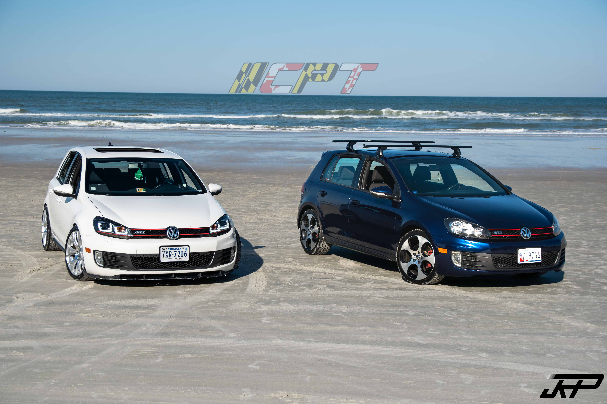

I am a 5th year at University of Maryland in the Information Science program. I began my freshman year at Towson university. I then transfered to Frederick Community College where I completed my associate's degree in general studies. Outside of classwork I am the president of College Park Tuning(CPT), the universitys car club.
Post college my goal is to enter some kind of entry level tech job where I can begin to get some real world experience. For the long term I would like to end up in a job that is at least somewhat related to the automtive industry. This could be anything from running a performance shop to something like the programming the computer aspect of cars.
| Skill | Proficiency |
|---|---|
| Python | Moderate |
| Salesforce | Advanced |
| Microsoft office | Proficent |
| R | Advanced |
| SQL | Advanced |
As a BSOS peer advisor I help to assist students in any way that might be neccessary. Whether this be anserting there questions or scheduling there appointments. I also help the faculty out by prepairng the folders for there appointmnts and taking care of other office task.
As a Food Lion customer service representaive I assisted customers with any issues they may have encountered in the store. I also made sure all ofthe cashiers were doing there job and behaing. As well as handling genreal accounting procedures and the western union and lottery machines.
This job consisted of me helping the driver in any way they may have needed. Most of the time this would be heling to run the packages to the houses or working to organize the back of the truck.